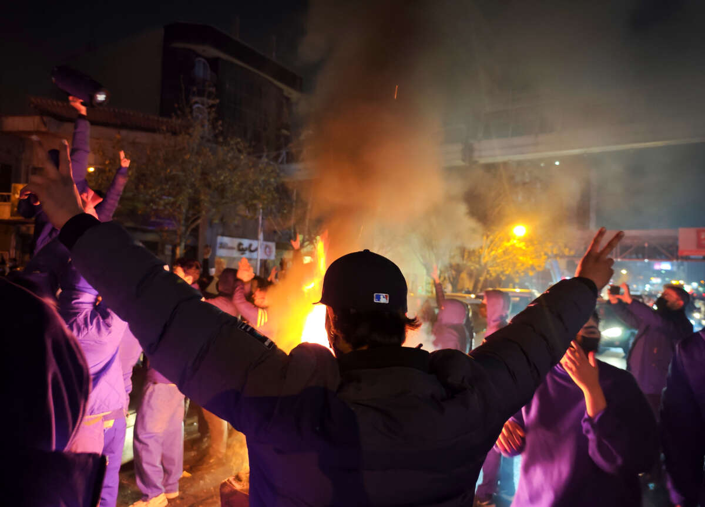

Timeline
Protest & Repression
Iran: A Timeline of Protest and Repression
A concise overview of key moments including the 1999 student protests, the Green Movement, the Aban protests, Flight PS752, the vaccine controversy, and Woman, Life, Freedom.
Open PDF